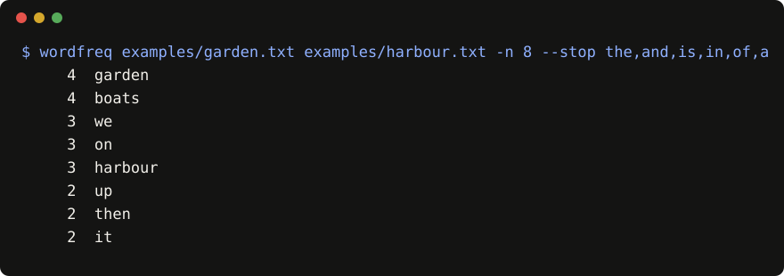

wordfreq
A word frequency counter CLI for plain text files. It prints the most common words across one or more files, with stop-word filtering, using only the Python standard library.

Quickstart
pip install git+https://github.com/example-dev/wordfreq
wordfreq notes/*.txt -n 20 --stop the,and,a,ofProof
9 of 10 fixed eval cases pass (python3 evals/run.py). The failing case is accented words: café is counted as caf.
Limitations
- ASCII letters only; most non-English text counts wrongly.
- Hyphenated words are split; no stemming; no built-in stop list.
- Files are read fully into memory.
FAQ
Does it send my text anywhere? No. It reads local files and prints to the terminal.
Is it the PyPI wordfreq package? No, that is an unrelated project that looks up word frequencies in languages.
More answers in the README FAQ. MIT licensed.